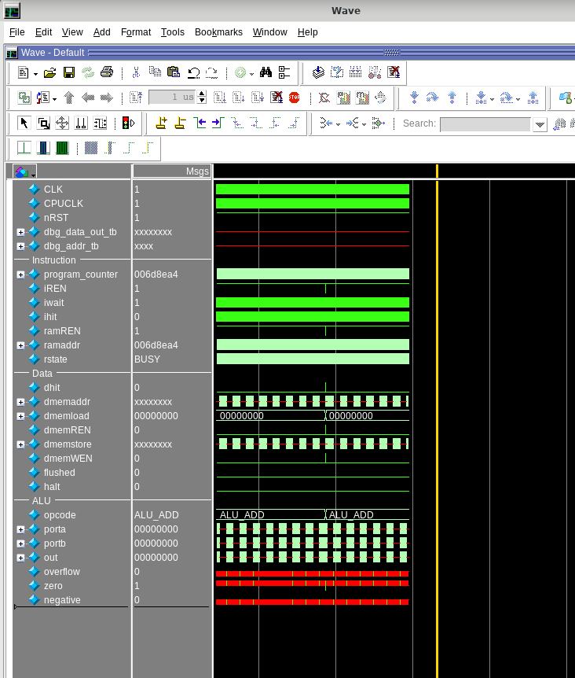

CPU design · Purdue ECE 437 · Aug 2026 to present In progress
RISC-V Processor
A 32-bit RISC-V CPU in SystemVerilog. I built and verified a single-cycle version first. The five-stage pipeline has its forwarding and hazard units designed and tested, and connecting them into the full pipeline is in progress. The hard part is getting data to the right stage at the right time.
A single-cycle CPU is simple but slow. Pipelining raises throughput, but data and control hazards must never change what a program computes.
Directed assembly programs for each hazard type, unit testbenches, QuestaSim waveforms, and a memory-latency sweep of the single-cycle baseline running mergesort.
Built and verified the single-cycle CPU, including variable-latency memory. Then built the pipeline: interstage registers with their own enable and flush signals, plus a forwarding unit and a hazard unit, each with its own testbench.
Single-cycle version verified. Forwarding and hazard units pass their testbenches, and the integration bug that only showed up once everything was connected is fixed. Next, I remove the no-ops from the test programs and compare the pipeline with the single-cycle design.
Pair project. I wrote the pipeline interfaces, the forwarding unit and the hazard-unit testbench. My partner wrote the assembly test programs, the hazard unit and the forwarding-unit testbench. In this course each of us designed one unit and wrote the testbench for the other's.
The baseline that made the case for a pipeline
Before building the pipeline I ran the single-cycle design on mergesort with the memory latency set to four different values. One variable, four levels, same program, so the cycle count could only change with memory latency.
Cycles grew in step with the latency, to 2, 4 and 6 times the first run, so each instruction was waiting on memory. Synthesis put the single-cycle design at roughly 95 to 100 MHz on the main clock against a 200 MHz target, and about 54 to 55 MHz on the CPU clock against 100. The slowest path was dominated by routing delay, not logic.
Swipe to view the full diagram →
The detailed datapath, in four views
This is the full diagram I drew for the pipelined CPU, signal names included. It is dense, so here are the four parts that matter most: forwarding, stalls and flushes, branch resolution, and memory hold and halt. Click any view for the full datapath.
Forwarding
A forwarding unit compares source registers against the destinations still in flight and drives three-input muxes, so an operand can come from the register file, the EX/MEM stage or the MEM/WB stage without waiting for write-back.
Stalls and flushes
The hazard unit stalls on a load-use hazard, holding the PC and the IF/ID register and flushing ID/EX. Each pipeline register has its own enable and flush logic, which also account for memory-ready and halt.
Branches resolve in execute
Branch control evaluates the six branch types in the execute stage. When a branch or jump is taken, the control-taken logic redirects the PC and squashes the wrong-path instructions behind it.
Memory hold and halt
Memory-ready logic holds the pipeline while memory is busy, and a halt register with halt-pending logic stops it cleanly. That is what lets the design work with variable-latency memory.
The bug the unit tests did not catch
The hardest problem was not in any single block. Every unit testbench passed, and the pipeline still misbehaved once the blocks were connected.
What I saw
With the units connected in the full pipeline and run through the system testbench, the simulation never finished. Instruction fetch stayed active, the program counter ran far past the end of the program, and the data signals went unknown.
Why the unit tests missed it
A unit testbench checks one block's outputs for the inputs it is given. Halt is not a property of one block. It depends on how the halt signal, the instruction fetch and each stage's enable and flush behave together.
The fix
I reworked the halt logic and adjusted the flush and enable signals. A halt seen in decode lets the instructions already in flight finish while the PC stops and fetching is disabled. Once the halt reaches write-back it is latched, and the whole datapath stops cleanly.
What I took from it
Passing each check in isolation did not prove that the whole flow worked. I now verify at every level: the unit, the connected units, and then complete programs, one change at a time.

BeforePC and fetch continue past the program; the simulation does not terminate correctly.